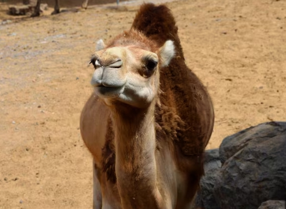
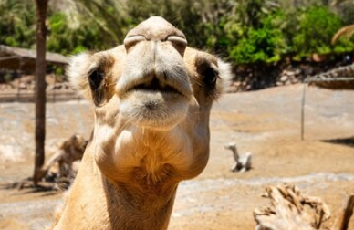

칠봉낙타 왜 그는 이사를 가는가
칠봉낙타라는 단어를 처음 들으면 낯설지만 이상하게 오래 기억에 남습니다. 칠봉이라는 말에서는 여러 봉우리가 이어진 풍경이 떠오르고, 낙타라는 말에서는 긴 길을 천천히 지나가는 묵직한 이미지가 함께 느껴집니다. 그래서 칠봉낙타는 단순한 이름이라기보다 한 번쯤 멈춰서 바라보게 만드는 키워드에 가깝습니다.
요즘은 평범한 이름보다 분위기와 이야기가 있는 이름이 더 쉽게 눈에 들어옵니다. 칠봉낙타 역시 그런 매력이 있습니다. 빠르게 지나가는 정보들 사이에서 조금은 느리고, 조금은 독특하고, 또 어딘가 정겨운 느낌을 줍니다. 그래서 글이나 페이지 안에 칠봉낙타라는 이름을 넣으면 방문자에게 호기심을 만들기 좋습니다.

칠봉낙타의 가장 큰 장점은 여러 방향으로 해석할 수 있다는 점입니다. 산길을 걷는 여행 이야기로도 어울리고, 사막을 건너는 낙타처럼 꾸준함을 상징하는 글에도 잘 맞습니다. 또 귀여운 캐릭터 이름처럼 사용할 수도 있고, 독특한 브랜드나 블로그 제목처럼 활용하기에도 부담이 없습니다. 한 단어 안에 자연, 여정, 인내, 개성이 함께 담겨 있기 때문입니다.
특히 인터넷에 글을 올릴 때는 첫인상이 중요합니다. 너무 흔한 단어는 금방 지나치기 쉽지만, 칠봉낙타처럼 조금 다른 이름은 사용자의 시선을 붙잡을 수 있습니다. 제목, 소개문, 이미지 설명, 짧은 스토리 안에 자연스럽게 반복해 넣으면 페이지 전체의 분위기가 또렷해집니다.

칠봉낙타라는 이름은 거창하게 꾸미지 않아도 충분히 매력적입니다. 천천히 걷지만 결국 목적지에 닿는 낙타처럼, 이 키워드는 조용히 기억에 남는 힘을 가지고 있습니다. 그래서 칠봉낙타를 중심으로 글을 쓴다면 단순한 설명보다 분위기, 장면, 감정을 함께 담는 것이 좋습니다. 그렇게 하면 평범한 페이지도 조금 더 따뜻하고 특별하게 느껴질 수 있습니다.
예를 들어 첫 화면에는 넓은 하늘이나 부드러운 모래빛 이미지를 넣고, 중간에는 산봉우리와 낙타 실루엣이 어우러진 장면을 배치하면 이름이 가진 분위기가 더 선명해집니다. 글의 흐름은 차분하게 시작해서 호기심을 만들고, 마지막에는 칠봉낙타라는 단어가 오래 남도록 정리하면 좋습니다.
결국 칠봉낙타는 특별한 설명이 없어도 상상력을 자극하는 이름입니다. 낯선 단어를 익숙한 감정으로 풀어내면 방문자는 페이지를 더 오래 읽게 되고, 키워드 역시 자연스럽게 기억하게 됩니다.